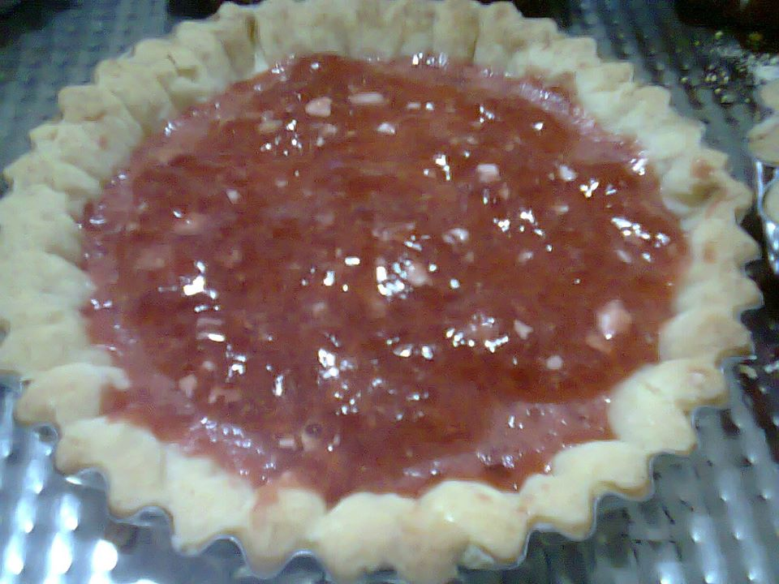

TARTA FRUTOS ROJOS
INGREDIENTES
- 150 gramos de manteca
- 100 gramos de azúcar
- 2 huevos
- Esencia de vainilla
- 300 gramos de harina
- 16 gramos de polvo de hornear
- 100 gramos de Frutillas
- 100 gramos de Arándanos

VOLVER A TARTAS